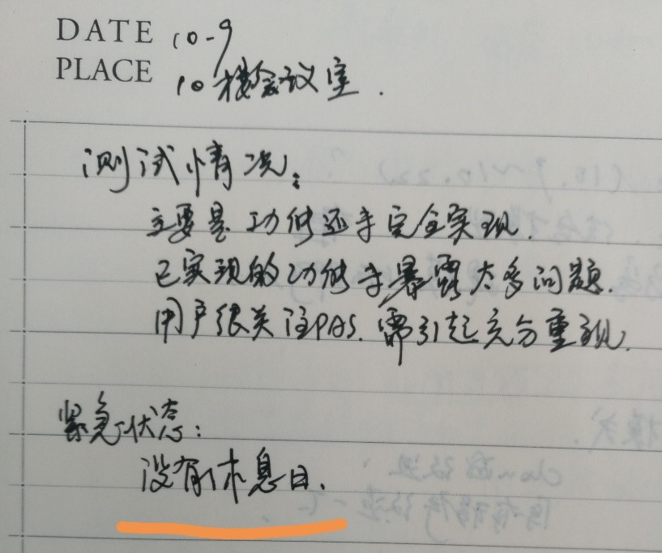
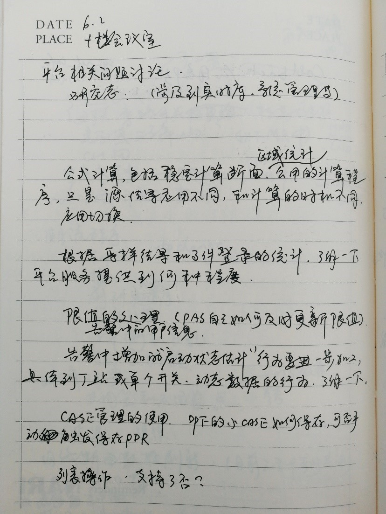
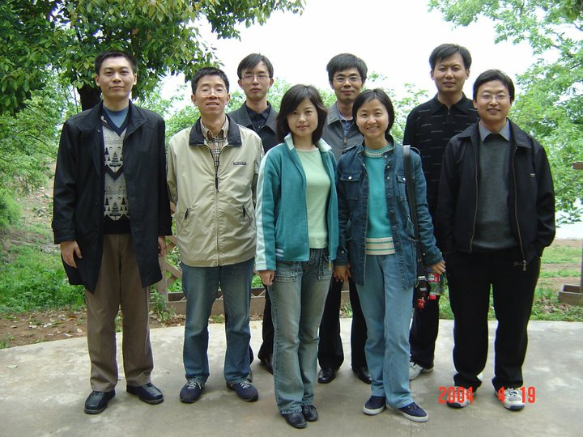
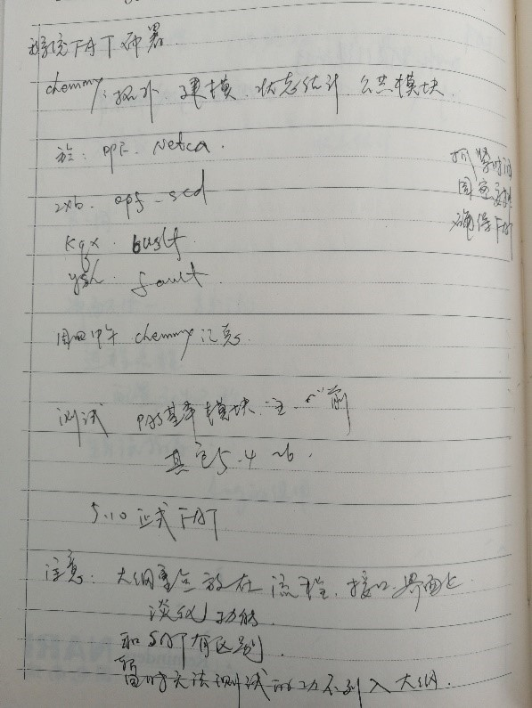
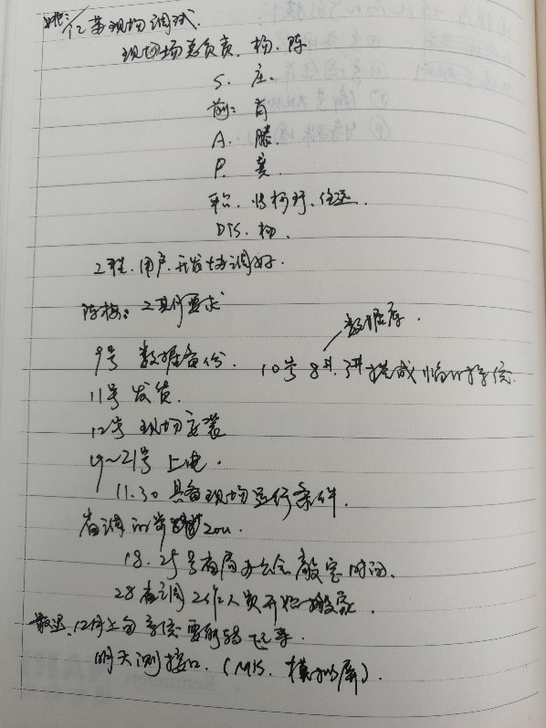
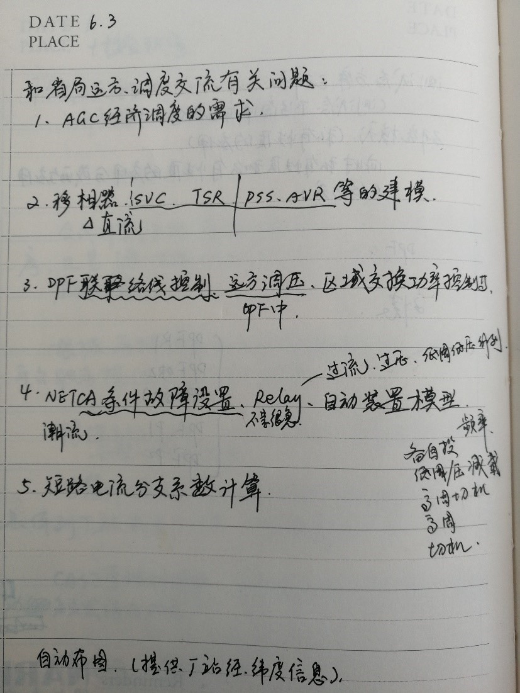
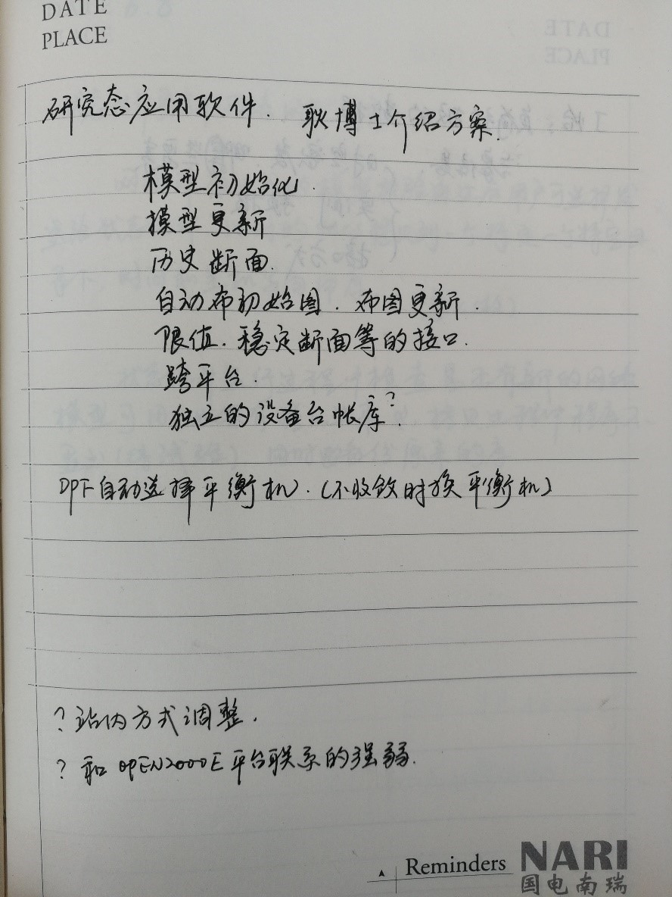
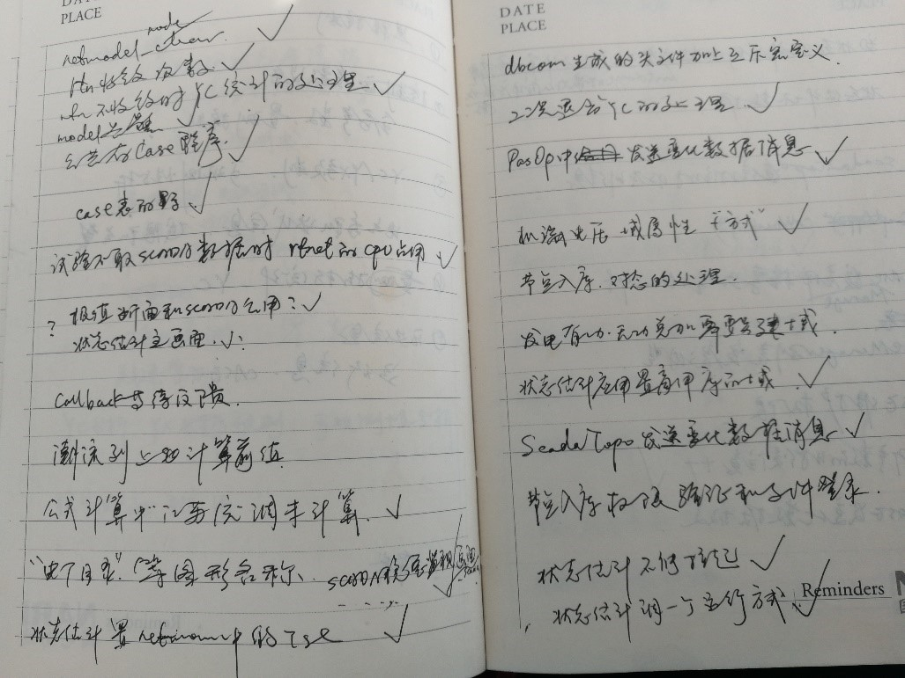
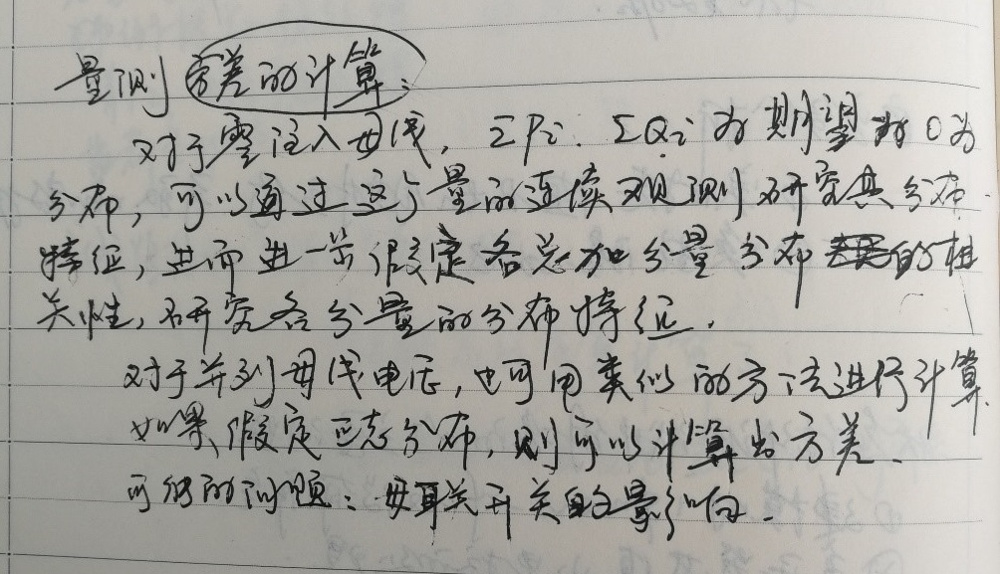

三个月前离开学习工作了19年的南瑞，在离职申请中我发自内心地写下“参与了OPEN-3000的研发，我至今仍为这一产品得到用户的广泛褒奖而感到自豪”，前两天和老同事聊天时，又有一个共同的感受，“是OPEN-3000养育了我们”。 参加OPEN-3000开发时我是刚工作不久的年轻人，很多大事并不知晓，但从参加的具体工作中得到的锻炼一直影响着自己。这几天翻了一下搬办公室时收拾出的工作笔记，这种感受越发强烈，就把回忆起来的一些事整理一下，配上几页旧笔记本上翻出的记录。
OPEN-3000刚开始研发时名字还没有确定，从OPEN-2000沿下来，使用OPEN-2000E作为临时的名字。记得曾经有提出讨论一下，取一个什么样的正式名字，最终选择了OPEN-3000，可以保持OPEN的品牌影响，而且OPEN这个词本身也有非常好的涵义。
OPEN之开放除了体现在系统架构上外，其实我感受到在组织开发队伍上同样是非常开放，我当时才工作两三年，刚刚积累一些工程经验和了解基本的程序，就被安排承担了还算重要的开发工作。开发团队中，还有好几位和我差不多时间参加工作也都很年轻的同事。正是领导有开放的思想才能决策让很多年轻同事承担重要的开发工作。
很多年轻同事在一起，气氛很活跃，干劲也很足。当时的研发任务安排得一直很紧，除了有下面这张图中的“紧急状态”，加班则是“正常状态”。

但是大家都没觉得累和辛苦，还很乐意能在加班时吃到巨鑫或海王星送来的盒饭。我当时住的离公司比较近，可以走回家，印象中晚上10点以后离开公司也是常有的事情。
而带着年轻人干的，则是好几位功底深厚的前辈和高人，从设计平台的杨总到我当时的部门经理高总，是我“努力在追随，始终在学习”的对象。杨总除了把平台架构的水平大大提升了一个台阶，更是非常关注为应用功能提供通用便捷的服务，还设计把原来在高级应用中的一些功能也变成通用化的服务。像下面这样平台和应用的讨论贯穿在整个开发过程中：

高总早已是稳定分析和控制方面的专家，但是非常谦虚平和，而且很严谨细致，很快在AGC专业和整个高级应用方面又开辟了全新的天地。紧张的工作中，高总不忘给大家放松减压，周末的时候自己组织开车带我们出去放放风。


有领导和老同事们带着，研发团队内部的氛围也非常好，大家都非常注重不断学习提升，非常关注软件产品的质量，不同部门、不同人之间也能够顺畅沟通、密切配合。记得当时图形为应用的操作提供了强大的Callback机制，应用部门又要为图形提供节点入库等功能支持，节点入库则需要商用库服务的配合，互相之间沟通协调的工作还是非常多的，不过当时和任远、老虎、张珂珩等之间可以非常顺畅有效地进行沟通，他们还给我提供了非常专业的支持，最终实现了很实用的功能。下面这两页笔记上可以看到很多当时参与研发的同事：
 
除了研发内部的交流，OPEN-3000系统的研发也得到了第一个用户江苏省调全力的支持。当时有省调的很多领导和同事长时间直接到南瑞的机房上班，除了检查项目研发的进展外，还一起参与问题和方案的讨论。我还清楚的记得有一次省调崔领导检查高软项目进展时，提出状态估计的主界面太简单了，之后我们立即就着手修改，把展示状态估计运行指标的曲线放到了主界面上，界面一下子就活了，现在还有大量仍在运行的系统使用着这个主界面。在电网调控运行的业务方面，更是得到省调自动化以外专业的很多指导和帮助，现在回想起来，我主要参与的高级应用软件功能的研发当时从调控、运方那里学习的仍然是太少了，回过头去看，自己做的不少工作和真正实用化的目标还是有挺大差距的。

和省调的交往过程中少不了一些争论，有些还比较激烈，但这些争论最终都帮助OPEN-3000系统不断地更实用、更完善，而且“不打不成交”吧，南瑞和省调之间更多的是密切的合作，省调给了南瑞莫大的支持，双方的领导和同事之间也结下了深厚的友情。
当时的研发工作虽然很紧张，但还是有序进行的。平台和基础应用的研发已经用上了版本管理、缺陷跟踪等工具，也有比较完整的设计评审和测试等流程。高软部分的软件工程当时刚刚起步，但是已经能够注重设计，下面这一页是一次设计讨论的记录：

也有时间做一些比较系统的思考和总结，例如（当时一口气写了5页）：

由于没有使用缺陷管理工具，我只能像下面这样跟踪消缺了：

当时自己参加应用软件的研发其实有点“无知者无畏”的味道，因为大学不是学电力系统专业的，对很多问题理解得都很肤浅，幸好当时有我的师傅於益军还有戴则梅等经常能给我一些深刻的专业角度的启发，还有部门内其他同事都能从专业的角度给我帮助。专业理解不深刻导致我不能对很多想法进行深入提炼，状态估计等软件功能开发也主要停留在实用化改进的水平。今年的“紫金论电”国际论坛上我做了一个报告，翻看2004年OPEN-3000开发期间的笔记才发现，报告中的Idea是那个时候产生的，从有这个想法到完全整理明白隔了13年之久！ 另外，最早在江苏省调实现的状态估计量测权值的实用化计算方法，也直到2016年才在《电力系统自动化》上发表出来。软件开发方面对状态估计坏数据的检测和辨识真正理解得比较清楚也是10多年以后的事了，这之后指导的研究生在这方面做了一点更深入的工作，研发部比我更年轻的同事也把软件做的更强大和更完善了。

这些是OPEN-3000开发初期的一些事，后来还经历了南网总调还有苏丹国调等大的项目，我也在这些OPEN-3000项目继续经受锻炼，在苏丹项目上有机会逐词逐句地写出了一份英文版的网络分析软件说明书。
新的公司刚刚起步，抽点时间整理下这些回忆，既因为它是一段非常充实而又愉快的时光，更是想总结思考一下以能从中继续吸收养分，在自己后续的工作中能继续体会和学习。我不记得当时有任何KPI指标在管控，但绩效之高是毋庸置疑的。当时作为一个普通的研发人员，感到OPEN-3000能非常成功，至少有关键技术、团队组织、过程管控等多方面的原因。现在看来，可能还有当时并不能直接感受到的更重要的原因，那就是带领着我们前进的姚总抑或更高的领导有着清晰的、远大的、坚定的目标、愿景或理想，现在再去思考，我想一定是有这一点的。